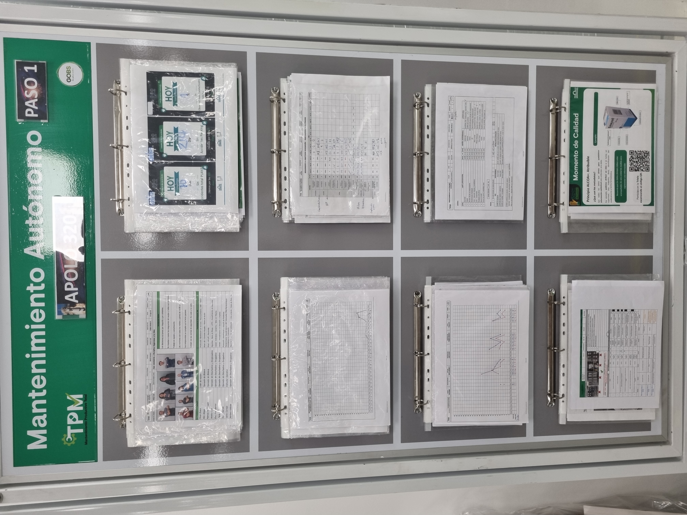
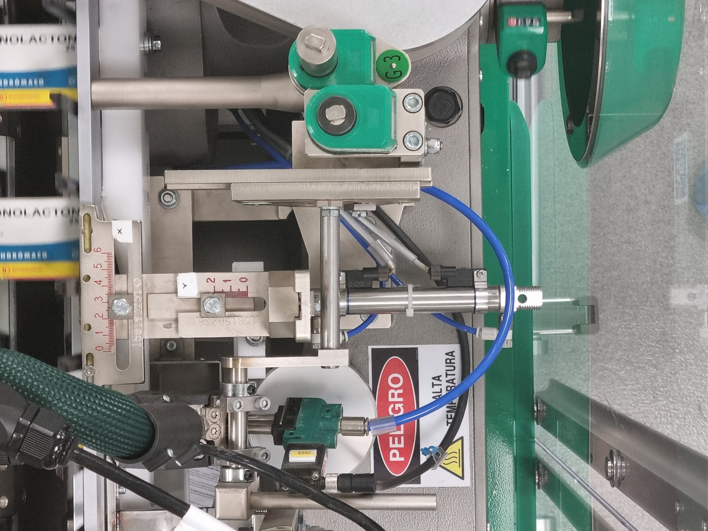
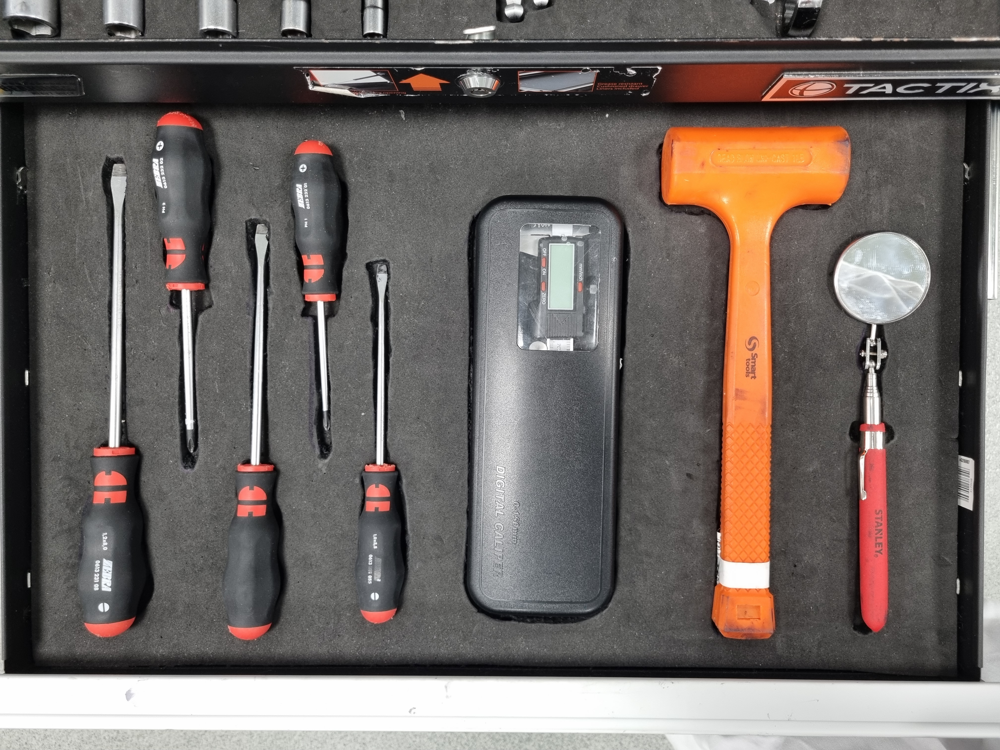
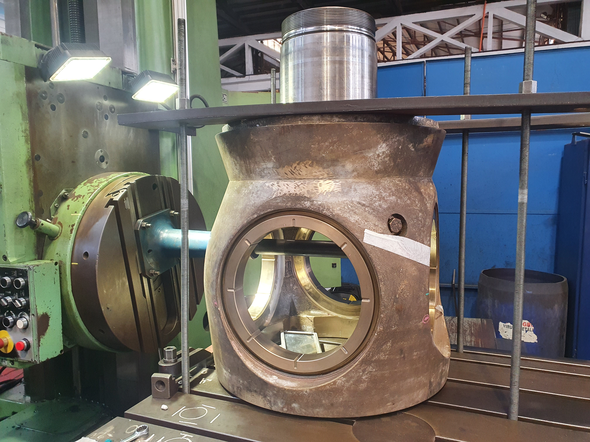
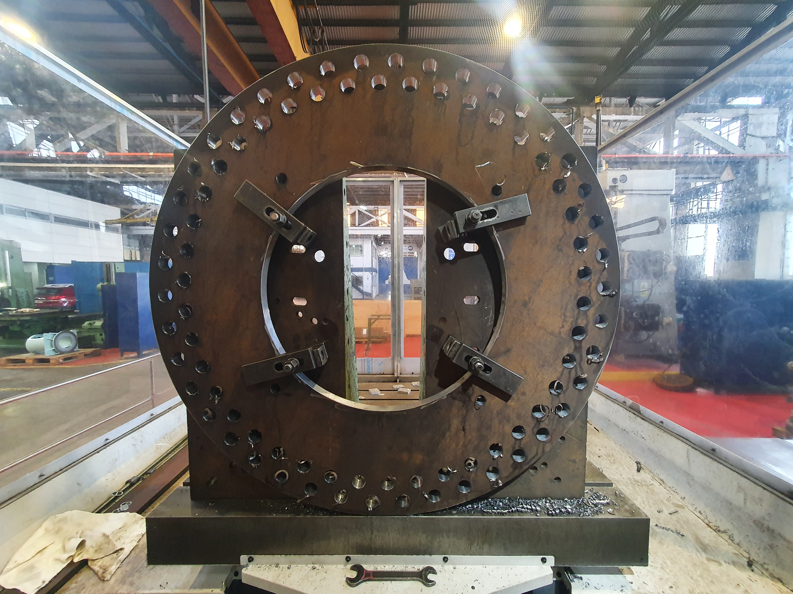
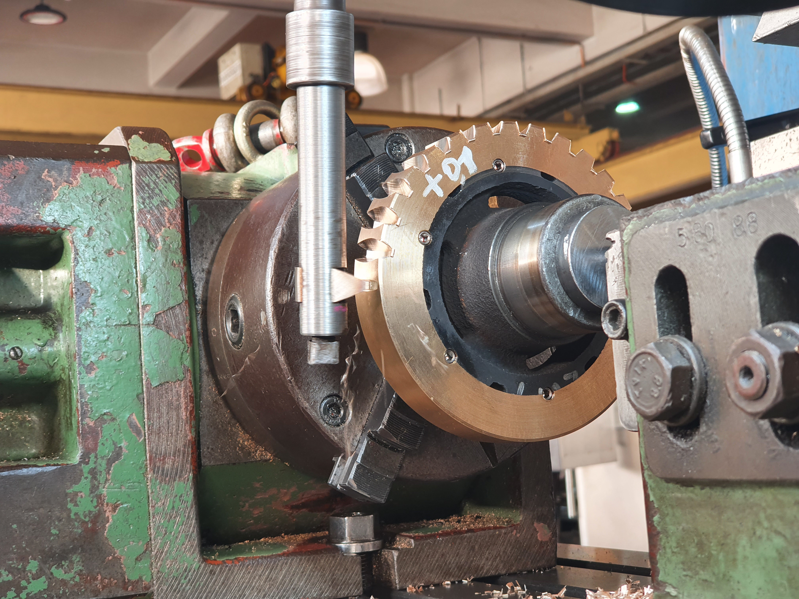
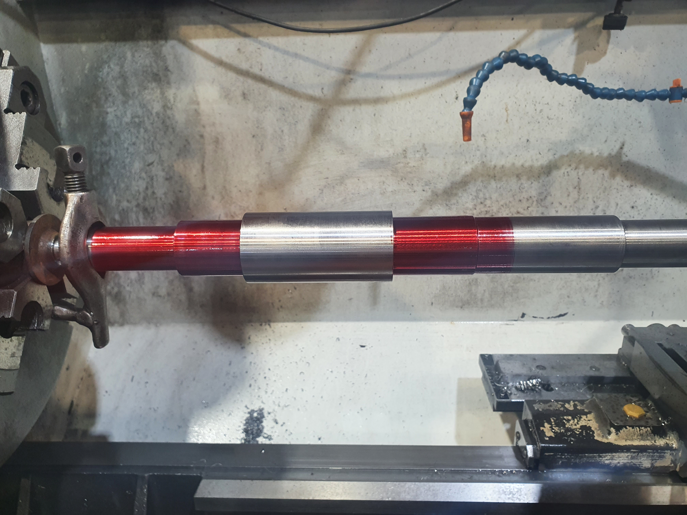

Configuración, calibración e implementación de sensores inalámbricos de monitoreo de tensión de pernos con tecnología de galgas extensiométricas en equipos mineros. Propuesta y desarrollo de proyecto de mejora de sensor mediante simulaciones estructurales. Análisis de datos recolectados de manera remota y reportabilidad periódica a cliente. Supervisar y auditar en terreno procedimiento de instalación de elementos de sujeción en molinos de bolas y SAG de faenas mineras.
Practicante | Grünenthal
Realicé mi práctica profesional en Grünenthal, una empresa farmacéutica de origen alemán. Mi trabajo consistió en brindar soporte en el plan de implementación de la metodología TPM (Mantenimiento Productivo Total) en dos líneas piloto del Departamento de Producción. TPM se basa en varios pilares, de los cuales me dediqué al pilar de Mantenimiento Autónomo. El Mantenimiento Autónomo se centra en el operador, quien adquiere conocimientos y responsabilidades sobre la máquina así como un rol más preponderante en las labores de mantención: este se encuentra capacitado para limpiar, lubricar, inspeccionar y proponer mejoras sobre la máquina y el proceso productivo, todo con el fin de contribuir a la disminución de pérdidas (cero paradas, cero defectos, cero accidentes).
Labores realizadas: actualización continua de tableros TPM, registro de parámetros críticos de máquinas de líneas piloto para metodología Centerline, asistencia y evaluación de reuniones MDL, aplicación de 5S en puestos de trabajo de operadores, elaboración de documentación (estándares, diagramas de Pareto, Lecciones de Un Punto, hojas de éxito, entre otros), reuniones periódicas con equipo TPM para seguimiento de metas necesarias para avanzar en la implementación del programa, identificación de oportunidades de mejora y propuestas de implementación.

Tablero TPM. Equipo "Apolo 320".

Parámetros de ajuste de máquina estuchadora.

Kaizen foam usada en la aplicación de 5S.
Practicante | ASMAR
Durante mi práctica industrial en ASMAR estuve bajo supervisión directa de distintos operadores de máquinas herramientas y me desempeñé como su ayudante. Tuve la oportunidad de trabajar con distintos operadores en máquinas distintas, pudiendo conocer y manipular (aunque escasamente debido al riesgo que conlleva para un alumno en práctica) tornos convencionales, tornos CNC, centros de mecanizado CNC y fresadoras.
Labores realizadas: asistencia en cálculo y configuración de parámetros de mecanizado, montaje y alineación de piezas, montaje de herramientas de corte y control dimensional.

Operación de mandrinado sobre cuerpo de hélice de embarcación de la Armada.

Mecanizado de pieza de grandes dimensiones.

Mecanizado de corona.

Ensayo de tintas penetrantes sobre eje de acero inoxidable para bomba de incendios de buque Almirante Montt.